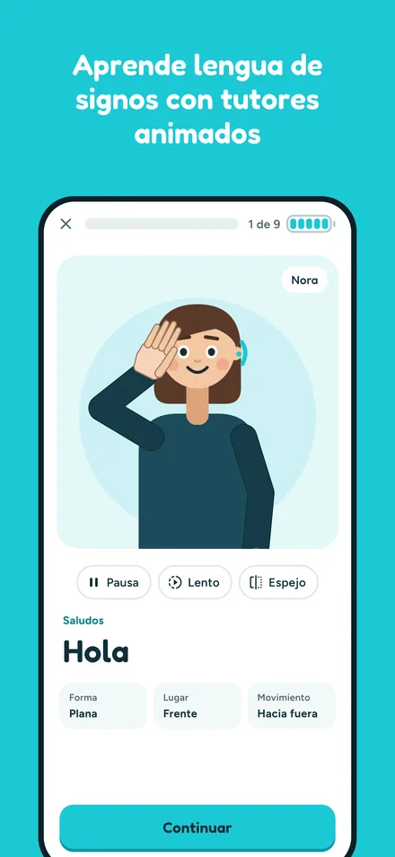
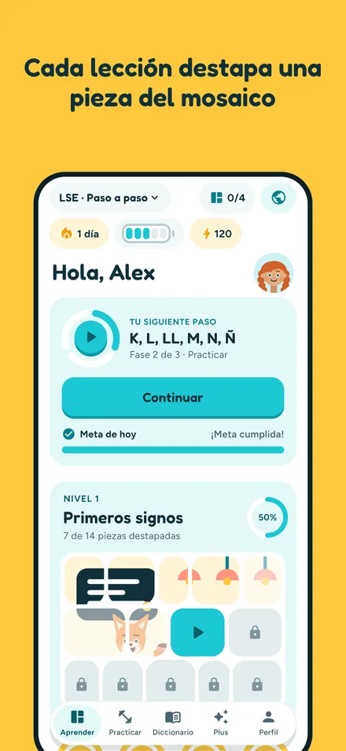
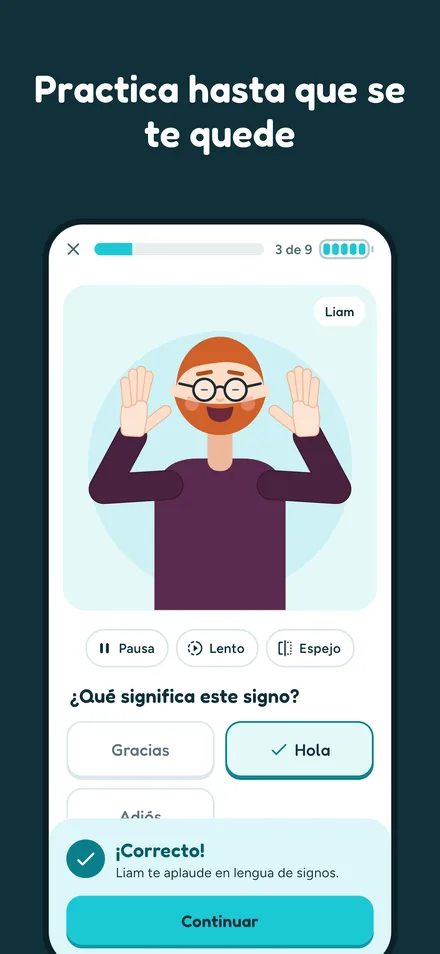
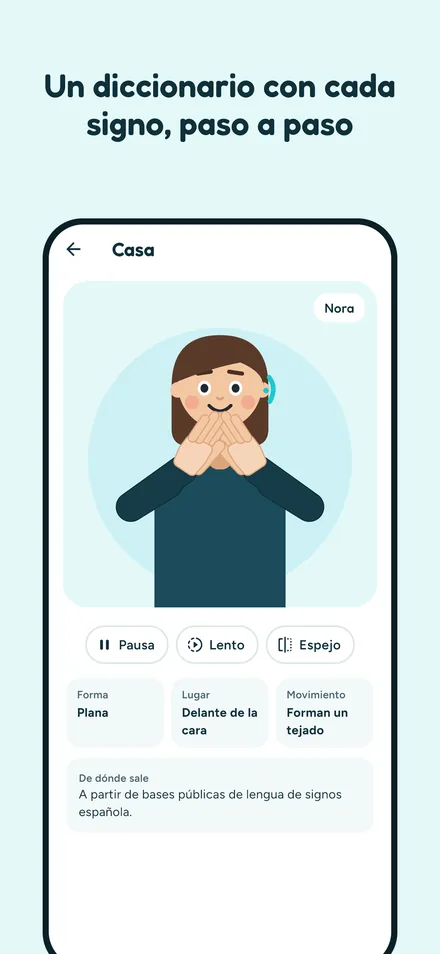
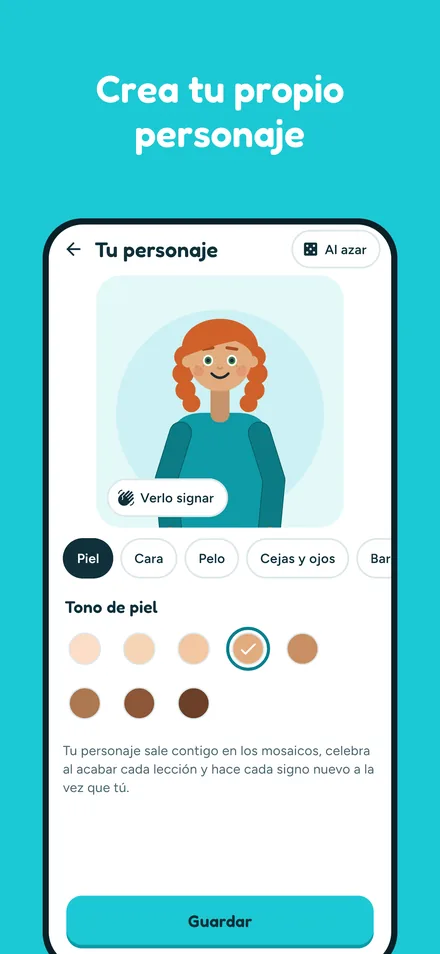
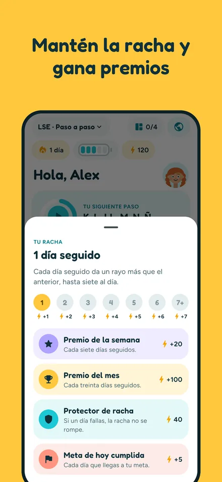
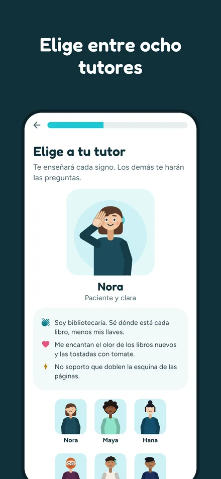

Aprende lengua de signos con tutores animados
Visualia te enseña lengua de signos española (LSE) desde cero, con tutores animados que signan delante de ti y lecciones que caben en un rato libre.
Muy pronto en App Store Para iPhone. Gratis, con compras dentro de la app.
Así se aprende
Un tutor que signa para ti
Cada signo, con la forma de la mano, dónde se hace y cómo se mueve. Puedes pararlo, verlo despacio o en espejo, tantas veces como quieras.
Ahora tú
Tu propio personaje hace el signo contigo para que lo repitas a la vez. Después, preguntas cortas para comprobar que se te ha quedado.
Un curso con pies y cabeza
Más de 250 signos y cuatro caminos: paso a paso, en familia, para peques y para el trabajo. Cada nivel es un mosaico que se destapa lección a lección.
Para que no se te olvide
Racha diaria con premio, repaso de lo que más te cuesta, un deletreador y un diccionario con todos los signos.
Hecho a tu medida
Ocho tutores, dos de ellos mascotas, y tu propio personaje. Para diestros y para zurdos.
Nada depende del sonido
Todo se ve y, en el teléfono, se siente. Sin cuenta, sin publicidad y sin seguimiento.
Por dentro







Gratis y Plus
Descargar Visualia es gratis. Sin pagar tienes el primer nivel de cada camino, el diccionario entero, el repaso y el deletreador. Visualia Plus abre el resto de los niveles y el repaso de tus fallos, y quita el límite diario. Puedes tenerlo con un solo pago, para siempre, o con una suscripción mensual o anual.
Sobre los signos
La lengua de signos no es universal: Visualia enseña la española (LSE). Como toda lengua viva, cambia de una zona a otra, y algún signo puede no coincidir con el que se usa cerca de ti. Visualia es una ayuda para empezar: no sustituye a un curso con profesorado sordo ni al trato con personas signantes. Los signos se han preparado consultando bases públicas de lengua de signos española.